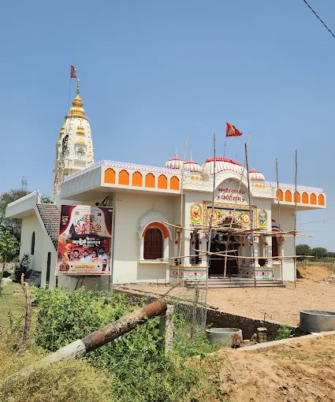
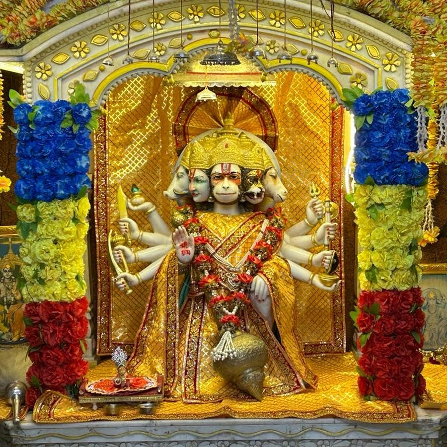

गैलरी
धाम के विभिन्न समारोहों और त्योहारों के पावन पल यहाँ देखें।



पंचमुखी बालाजी पचेरी धाम एक पवित्र मंदिर है जो भगवान बालाजी को समर्पित है। यहाँ देशभर से भक्त श्रद्धा और भक्ति के साथ आते हैं। यह धाम प्राकृतिक सुंदरता से घिरा हुआ है और यहाँ आकर आध्यात्मिक शांति का अनुभव होता है।
मंदिर अपने भव्य और भक्तिपूर्ण आरती समारोह के लिए प्रसिद्ध है, जो प्रत्येक दिन श्रद्धालुओं के लिए एक अद्भुत अनुभव प्रदान करता है।
यहां की संध्या आरती प्रतिदिन शाम 6:30 बजे प्रारंभ होती है और लगभग 30 मिनट तक चलती है। इस दौरान पारंपरिक दीपों और मंत्रोच्चारण से मंदिर का वातावरण भक्तिमय हो जाता है।
आरती के समय धूप, दीप, और भजन के साथ एक अद्भुत आध्यात्मिक माहौल निर्मित होता है, जो हर भक्त के मन को शांति और आनंद से भर देता है।
आचार्य दीपक कौशिक एक विख्यात आध्यात्मिक गुरु एवं विद्वान हैं, जिन्होंने भारतीय संस्कृति, धर्म, और योग के क्षेत्र में गहन अध्ययन एवं प्रचार-प्रसार किया है। वे भक्तों को आध्यात्मिक ज्ञान और जीवन में शांति प्राप्ति का मार्ग दिखाने के लिए समर्पित हैं।
धाम के विभिन्न समारोहों और त्योहारों के पावन पल यहाँ देखें।
मंदिर कार्यालय से संपर्क करें:
फोन: +91-9876543210
ईमेल: info@panchmukhibalaji.com
पंचमुखी बालाजी पचेरी धाम का वीडियो दर्शन करें